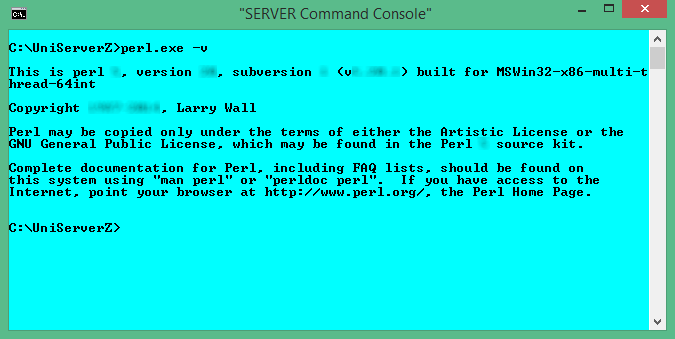

|
|
Perl CLI |
Perl scripts are executed in one of two ways; through a web sever where the output is sent to a browser, or through the command-line interface. Main difference between the two methods is the format of new lines. Output to a browser requires the HTML line break <br />, while the output to a command-window requires \n. This page provides a basic introduction to Perl CLI (command line interface).
Overview
Note: It is assumed you have installed one of the Perl modules such as ZeroXIV_strawberry_perl_x_x_x.exe or ActivePerl.
Uniform Server is portable; it does not make changes to your PC. As a consequence, the standard command prompt (console window) cannot be used to run Perl CLI code. The path to perl.exe along with other environment variables are undefined. To run Perl CLI code on Uniform Server, use the Server Console.
The Server Console button opens a command-window (command prompt) with environment variables preset and paths configured for Uniform Server utilities, including the Perl interpreter. Apart from cosmetics, it is identical to a standard command prompt.
Perl code is run from the command prompt, either directly by typing lines of code or indirectly using code saved in a script file.
Command-window
Running scripts via a command-line is performed using the CLI interpreter perl.exe. This program is located in folder C:\UniServerZ\core\perl\bin.
Note: UniController automatically tracks the installation and changes this path accordingly. In addition, UniController sets several environment variables that are required for portability.
Check functionality:
Type the following into the command-window and press Enter: perl.exe -v Displays Perl version number; see image on right for example. Note 1: You can clear the command-window by typing CLS |
 |
Perl Command-line - run code directly
The above demonstrates running Perl code directly using the CLI interpreter perl.exe. The following example prints hello world:
perl.exe -e "print \"hello world\n\""
The interpreter program takes a number of parameters whose function is:
perl.exe | CLI interpreter program perl.exe. If a file extension is not provided, Windows will assume .exe. Hence, you can use just perl. |
-e | Parameter -e informs Perl not to expect a file. Next thing on the command-line is actual Perl code. |
"print \"hello world\n\"" | Perl code to run. Note: Windows requires the code to be enclosed within quotes. |
Note: If your code contains quotes, to avoid problems these must be escaped using a backslash; for example:
perl.exe -e "print \"hello world\n\""
Code examples
The following provide examples that you can cut and paste into the command-window:
Examples:
perl -e "print 'Hello World!'" #Basic print
perl -e "print 'Hello World!'.\"\n\"" #Escape quotes
perl -e "print 'First line'.\"\n\";print 'Second line'" #Run multi-lines
perl -e "$x = 1;$y = 4;print $x+$y" #Example calulation
perl -e "foreach $key (keys(%ENV)) {printf(\"%-24.24s: $ENV{$key}\n\", $key);}" #Print environment variables
perl -e "print $^X" #Full path to perl.exe location
|
Perl Command-line - run code from file (Perl scripts)
Entering code directly is ideal for short scripts. However, for scripts containing several lines of code, it is preferable to save these to a file and run this file from the Server Console.
The following examples show how to run Perl scripts.
Run basic Perl script:
|
Create script:
Create the test script shown on the right and save to root folder UniServerZ with name test1.pl |
test1.pl
print "hello world\n"; |
|
|
Run script:
Run the script by typing the following into a command-window: perl test1.pl |
Result1
C:\UniServerZ>perl test1.pl hello world C:\UniServerZ> |
Pass arguments to script:
|
Create script:
Create the test script shown on the right and save to root folder UniServerZ with name test2.pl
|
test2.pl
print "$_\n" for @ARGV; print "@ARGV[0]\n"; print "@ARGV[1]\n"; print "@ARGV[2]\n"; |
|
|
Run script:
Run the script by typing the following into a command-window: perl test2.pl aaa bbb ccc |
Result2
C:\UniServerZ>perl test2.pl aaa bbb cccc aaa bbb cccc aaa bbb cccc C:\UniServerZ> |
Environment variables - Read and display:
|
Create script:
Create the test script shown on the right and save to root folder UniServerZ with name test3.pl |
test3.pl
foreach $key (keys(%ENV)) {
printf("%-24.24s: $ENV{$key}\n", $key);
}
print "\n\n";
print "Environment var PHP_INI_SELECT=".$ENV{"PHP_INI_SELECT"}."\n";
print "Environment var PHP_SELECT=".$ENV{"PHP_SELECT"};
|
|
|
Run script:
Run the script by typing the following into a command-window: perl test3.pl All environment variables are displayed using:
foreach $key (keys(%ENV)) {
printf("%-24.24s: $ENV{$key}\n", $key);
}
Individual environment variables PHP_INI_SELECT and PHP_SELECT are displayed using:
print "Environment var PHP_INI_SELECT=".$ENV{"PHP_INI_SELECT"}."\n";
print "Environment var PHP_SELECT=".$ENV{"PHP_SELECT"};
|
Result3
PROCESSOR_REVISION : 3a09 FP_NO_HOST_CHECK : NO PROGRAMFILES : C:\Program Files (x86) PROGRAMDATA : C:\ProgramData WINDIR : C:\WINDOWS AP_SSL_PORT : 443 SYSTEMDRIVE : C: US_ROOTF_WWW : C:/UniServerZ/www US_SERVERNAME : localhost PHP_INI_SELECT : php_production.ini ONLINESERVICES : Online Services TMP : C:\Users\xxx\AppData\Local\Temp PROGRAMFILES(X86) : C:\Program Files (x86) USERDOMAIN_ROAMINGPROFIL: xxx ---- All variables and the following: --------- Environment var PHP_INI_SELECT=php_production.ini Environment var PHP_SELECT=phpxx C:\UniServerZ> |
Passing parameters
You can pass parameters between scripts (such as a batch file) and Perl. For details, see page Perl passing parameters.